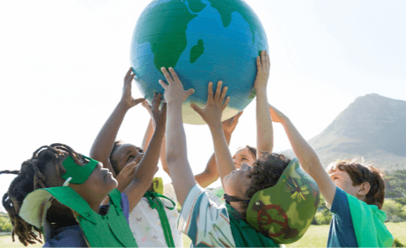
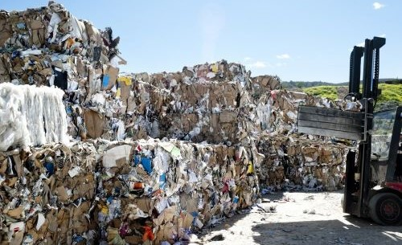
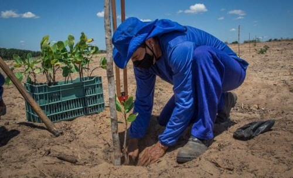

Conservação da Biodiversidade: Envolve atividades voltadas para a proteção e
preservação de espécies ameaçadas, habitats naturais e ecossistemas diversos.

Educação Ambiental: Inclui programas educacionais destinados a conscientizar
e informar a comunidade sobre questões ambientais, promovendo a
sustentabilidade e a adoção de práticas mais eco-friendly.

Reflorestamento e Restauração Ambiental: Engloba iniciativas de plantio de
árvores, recuperação de áreas degradadas e promoção da reflorestação como
forma de combater as mudanças climáticas e restaurar ecossistemas.

Gestão de Resíduos: Consiste em ações para reduzir, reutilizar e reciclar
resíduos sólidos, além de promover práticas de descarte responsável e
conscientização sobre a importância
da gestão adequada dos resíduos para a
saúde do planeta.